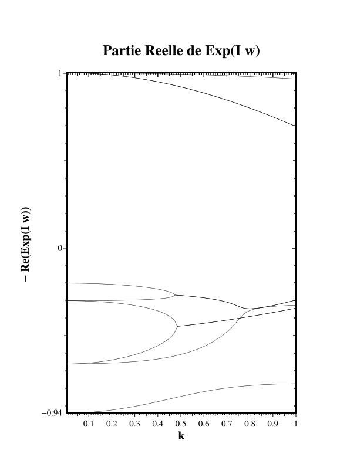
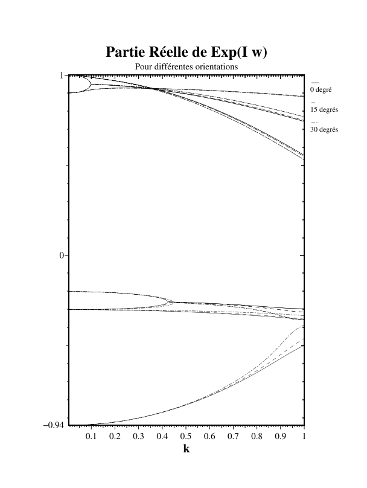
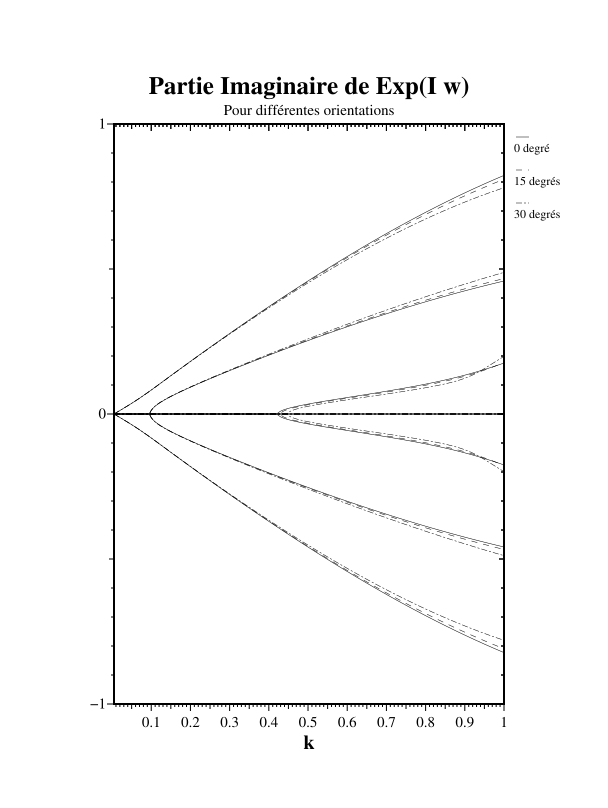
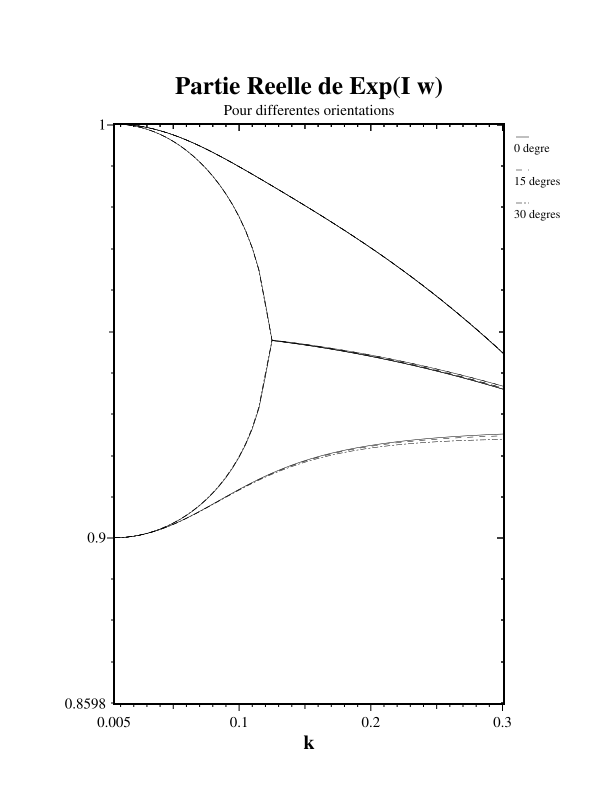
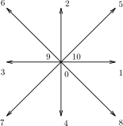
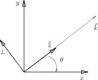

Part III · Modeling of Viscoelasticity with the Lattice Boltzmann Method — Chapter 2
Implementation and isotropy
2.1 Introduction
The simple principle of introducing temporal effects gives rise to nontrivial problems. Indeed, the Chapman-Enskog expansion, which allows us to separate the time scales, is no longer suited to handling these effects. This expansion is performed under the assumption that the longest times are smaller than the inverse of the smallest nonzero eigenvalue of the collision operator. This amounts to saying that the second-order dynamics of the non-conserved quantities is neglected. This assumption is clearly not satisfied in the case of the introduction of a large but finite relaxation time, because the long-time modes will permanently be far from their equilibrium values. We will only be able to use this expansion, as it stands, in the case where the relaxation times we consider will be infinite, that is, the case where these modes will be conserved quantities of the model. The Chapman-Enskog expansion will then be valuable to us for the determination of isotropy conditions of the models as well as for the determination of the equilibrium quantities when it is usable. Moreover, this expansion is only valid in the hydrodynamic limit, that is, at small wavenumber \(k\) and small frequency \(\omega\).
2.2 Dispersion equation
An alternative to the Chapman-Enskog expansion for studying the models in which we will have finite but very large relaxation times, is to choose a method used, among others, by Coevorden et al. [23]. This method is based on the analysis of the dispersion equation.
To determine the dispersion equation of our models, we will use a technique identical to that of the study of hydrodynamic fluctuations, but with the variables density, velocity, pressure, etc., replaced by the populations \(N_i\).
Let us consider a perturbation of the populations around an equilibrium state, \[\begin{equation} N_i(\vec{r},t)=\delta N_i(\vec{r},t)+N_i^{(0)}. \end{equation}\]
Since we are going to look at the evolution of the fluctuations, or perturbations, we will make the hypothesis of a quasi-stationary and homogeneous equilibrium state, that is, \(N_i^{(0)}\) depends neither on space nor on time explicitly, but only on the density and the mean velocity. Because the fluctuations \(\delta N_i\) around their equilibrium values \(N_i^{(0)}\) are small, the equations describing their spatial and temporal variations are obtained by linearizing the evolution equation.
The evolution equation of our lattice Boltzmann gas being written, \[N_i(\vec{r}+\vec{c}_i,t+1)=N_i(\vec{r},t)-\sum_{j=0}^{b}{\Omega_{ij}\,\left( N_j-N_j^{(0)}\right)},\] its linearization gives, keeping the first order of expansion in \(\delta N_i\),
\[\begin{equation} \delta N_i(\vec{r}+\vec{c}_i,t+1)=-\left( {\partial H_i \over \partial N_j}\right)^{(0)}\, \delta N_j(\vec{r},t), \end{equation}\] where \(\displaystyle H_i=N_i(\vec{r},t)-\sum_i{\Omega_{ij}\,\left( N_j-N_j^{(0)}\right)}\).
We seek a solution of the form: \[\begin{equation} \delta{\mathbf{N}}=\delta{\mathbf{N}}_0\,e^{i(\,{\mathbf{k}}\cdot{\mathbf{r}}-\omega\,t)}, \end{equation}\] which leads us to: \[\begin{equation} \delta N_j({\mathbf{k}},t+1)=- e^{-i\,{\mathbf{k}}. \vec{c}_j}\left( {\partial H_j \over \partial N_l}\right)^{(0)}\,\delta N_l({\mathbf{k}},t). \end{equation}\]
We must now compute \(\displaystyle\left( {\partial H_j \over \partial N_l}\right)^{(0)}\), which gives us: \[\begin{eqnarray} &\displaystyle\left( {\partial H_j \over \partial N_l}\right)^{(0)}&=\delta_{j\,l}-{\partial \over \partial N_l}\,\sum_m{\Omega_{j\,m} (N_m-N_m^{(0)})} \nonumber \\ &&=\delta_{j\,l}-\sum_m{\Omega_{j\,m}(\delta_{m\,l}-T_{m\,l})}\\ &&=\delta_{j\,l}-C_{j\,l} \nonumber \end{eqnarray}\]
In practice, one can greatly simplify this computation by carrying it out in the basis where the collision matrix is diagonal, such as that proposed in part 3.
Returning to the initial conditions, one obtains: \[\begin{equation} \delta N_j({\mathbf{k}},t)=\left(- e^{-i\,{\mathbf{k}}. \vec{c}_j}\left( \delta_{j\,l}-C_{j\,l}\right)\right)^t \delta N_l({\mathbf{k}},0), \end{equation}\] and, taking the Fourier transform with respect to the time variable, one finds: \[\begin{equation} \delta N_j({\mathbf{k}},\omega)={-1 \over \delta_{j\,l}-e^{-i\,\omega} \left(e^{-i\,{\mathbf{k}}. \vec{c}_j}(\delta_{j\,l}-C_{j\,l}) \right)}\delta N_l({\mathbf{k}},0), \end{equation}\] where we made use of the rule for the summation of geometric series. Rearranging the terms, we finally have: \[\begin{equation} \delta N_j({\mathbf{k}},\omega)=\left({ z \,e^{i\,{\mathbf{k}}. \vec{c}_j} \over (1-z\,e^{i\,{\mathbf{k}}. \vec{c}_j})\delta_{j\,l}-C_{j\,l} }\right)\delta N_l({\mathbf{k}},0), \end{equation}\] with \(\displaystyle z=e^{i\,\omega}\).
The dispersion equation is then a solvability condition of the system, made up of the previous dispersion relations, and is expressed by:
\[\begin{equation} \label{dispersion} D(z)=Det((1-z\,e^{i\,{\mathbf{k}}. \vec{c}_j})\delta_{j\,l}-C_{j\,l})=0. \end{equation}\]
For a given wave vector \({\mathbf{k}}\), the roots of \(D(z)=0\) give the frequency in the complex plane of the corresponding “mode” in such a way that there exists a nonzero population vector \(\delta{\mathbf{N}}_0\,e^{i(-\omega t+\mathbf{k.r})}\) solution of the linearized Boltzmann equation. Even though the analytical computation of the determinant \(D(z)\) is possible by means of symbolic computation software, the hope of exhibiting analytic roots of it is in vain. The solutions will therefore be approximated either by a numerical solver, or by means of an expansion in powers of \(k\). According to classical studies of hydrodynamic fluctuations, as described for example in [17], one predicts that there exist solutions which, regardless of the spatial orientation of the wave vector \(k\), take the form: \[\begin{equation} \label{transverse} \omega=-\nu\,k^2, \end{equation}\] with \(\nu\) the shear viscosity, for the purely diffusive modes which we will call shear modes or transverse modes, and \[\begin{equation} \label{longitudinaux} \omega_\pm=\pm i\,c_s\,k-\Gamma\,k^2, \end{equation}\] for the propagative and diffusive modes which we will call acoustic modes. We will again show this type of property a little later during the analysis of the eleven-velocity viscoelastic model through equations (2.31). The value \(\Gamma\) is called the width or attenuation; it indicates the characteristic lifetime of these modes, \((\Gamma k^2)^{-1}\). It is proportional to the viscosities and other diffusive coefficients of the model. These modes propagate at the speed of sound in the medium \(c_s\).
The number of these two types of modes depends on the dimension of space; typically, in three dimensions, neglecting thermal effects, one counts two transverse modes and two longitudinal modes. It has been shown [25] that lattice gases allow one to recover these modes with similar techniques. For lattice Boltzmann gases, the same holds, and one can determine numerically the dependence of the solutions as a function of \(k\). Figure 2.1 is the representation of the solutions, in real and complex parts, of the dispersion equation for a 9-velocity model in two dimensions. Unlike the modes in three dimensions, here we will have only a single transverse mode still given by equation (2.10), and two longitudinal modes still given by equation (2.11).

Exploiting these figures indeed confirms the existence of a purely diffusive transverse mode, identifiable in the upper part of the graph corresponding to the real part of the solutions (the curve farthest from the line \(y=1\)). The study of this parabola gives us a way to verify relation (2.10). The curve closest to the line \(y=1\) corresponds to the real part of the so-called propagative solution, and again allows us to verify the relation: \[\begin{equation} \Gamma={\nu +\xi\over 2}, \end{equation}\] with \(\xi\), the bulk viscosity. On the graph of the imaginary part, it is easy to identify the straight lines corresponding to the acoustic contributions. One notices moreover that the approximation of a constant speed of sound as a function of \(k\) is only valid for small \(k\). When \(k\) becomes of order 1, the effects due to the presence of an underlying lattice appear and the straight lines curve inward. The other modes such that \(|z|<1\) when \(k\to 0\) are called “non-hydrodynamic” and do not play a predominant role.
2.3 First viscoelastic model
We will apply the principles mentioned at the beginning of this part. In a first step, we will not introduce additional internal variables in order to better appreciate their effects. Indeed, let us try to take very small eigenvalues for the modes related to the deformation rate tensor. In the various studies carried out in this thesis, these modes are denoted \(S_{\alpha\beta}\). For simplicity let us consider the two-dimensional case we have taken previously and in which we now take \(\lambda_\nu=0.1\). This value is not very small but it allows us to better observe the effects that appear. Indeed, if one plots the solutions of the dispersion equation in figure 2.2, one notices that two diffusive modes have become propagative beyond a certain value \(k=k_c\).


The interpretation of such a phenomenon is not simple, but can be understood as follows: for small values of \(k\), the fluid is viscous. Thus, for a forcing with a long characteristic time, the fluid behaves as a classical fluid. Beyond a certain value of \(k\), called \(k_c\), two complex roots of the dispersion equation appear. There are then two new propagative modes, so transverse waves will be propagated in the medium.
One can then make the observation that for \(k>k_c\), the viscosity of the fluid can be represented by a complex viscosity of the form \(\displaystyle\nu^*={\nu_0/ (1+i \omega \tau)}.\)
The fluid can then be regarded as being of viscoelastic type.
If the overall behaviour of the previous model seems satisfactory on the graphs of the solutions of the dispersion equation, it is not so in the details. Indeed, by zooming in on the upper part, figure 2.3 on the left of the graph of the real part of the solutions, one notes that the attenuation of the longitudinal mode is no longer of the form \(\Gamma k^2\) during the transition from a viscous to a viscoelastic behaviour. Moreover, it depends strongly on the angle of the vector \({\mathbf{k}}\) after this transition. One can also note that the attenuation of the transverse mode is not isotropic either.

The anisotropy of the attenuations is due to the fact that the shear viscosity is no longer isotropic because it is imposed by modes coming from a higher order of the expansion, whose dynamics we do not control a priori. Within the framework of the Maxwell theory [8], this viscosity, called \(\nu_\infty\), or high-frequency viscosity, is zero. For our Boltzmann gas, this situation is not possible, which is why we will no longer attempt to model a fluid without imposing an infinite viscosity. In the same way that Jeffreys [3] introduced an infinite viscosity into the Maxwell model, we are going to follow the same approach for our models through the introduction of additional internal variables.
2.4 Isotropic eleven-velocity model
To allow us to fix the value of the “infinite” viscosity as a function of different parameters of the model, we will introduce two additional modes, \(P_{xx}\) and \(P_{xy}\), having the same symmetries as the viscous modes of the previous model, \(S_{xx}\) and \(S_{xy}\). All four will be constructed through the introduction of two additional internal variables. The two new modes will have a very long relaxation time, while the two viscous modes will keep, as for the simulation of a classical fluid, a short relaxation time. We will thus have an “eleven-velocity” model in two dimensions as indicated in figure 2.4, where the two internal variables are represented by the populations \(9\) and \(10\) which do not move and which are located at the centre of the figure.

To build this new model, we must define a new basis made of the eigenvectors of the collision matrix. We therefore choose the same vectors as for the nine-velocity model (D2Q9), to which we add two zero components for all eigenvectors, except for those associated with the four viscous modes. Since we must choose an orthogonal basis, this leads us, keeping two free parameters \(a\) and \(b\), to take: \[\begin{eqnarray} {\mathbf{e}}_{0} &=&\left(\phantom{-}1,\phantom{-}1,\phantom{-}1,\phantom{-}1,\phantom{-}1,\phantom{-}1,\phantom{-}1,\phantom{-}1,\phantom{-}1, \phantom{-}0, \phantom{-}0\phantom{-}\right) \nonumber\\ {\mathbf{e}}_{1} &=&\left(\phantom{-}4,\phantom{-}1,\phantom{-}1,\phantom{-}1,\phantom{-}1,-2,-2,-2,-2, \phantom{-}0, \phantom{-}0\phantom{-}\right) \nonumber\\ {\mathbf{e}}_{2} &=&\left(\phantom{-}0,\phantom{-}1,\phantom{-}0,-1,\phantom{-}0,\phantom{-}1,-1,-1,\phantom{-}1, \phantom{-}0, \phantom{-}0\phantom{-}\right) \nonumber\\ {\mathbf{e}}_{3} &=&\left(\phantom{-}0,\phantom{-}0,\phantom{-}1,\phantom{-}0,-1,\phantom{-}1,\phantom{-}1,-1,-1, \phantom{-}0, \phantom{-}0\phantom{-}\right) \nonumber\\ {\mathbf{e}}_{4} &=&\left(\phantom{-}0,\phantom{-}2,\phantom{-}0,-2,\phantom{-}0,-1,\phantom{-}1,\phantom{-}1,-1, \phantom{-}0, \phantom{-}0\phantom{-}\right) \\ {\mathbf{e}}_{5} &=&\left(\phantom{-}0,\phantom{-}0,\phantom{-}2,\phantom{-}0,-2,-1,-1,\phantom{-}1,\phantom{-}1, \phantom{-}0, \phantom{-}0\phantom{-}\right) \nonumber\\ {\mathbf{e}}_{6} &=&\left(\phantom{-}4,-2,-2,-2,-2,\phantom{-}1,\phantom{-}1,\phantom{-}1,\phantom{-}1, \phantom{-}0, \phantom{-}0\phantom{-}\right) \nonumber\\ {\mathbf{e}}_{7} &=&\left(\phantom{-}0,\phantom{-}1,-1,\phantom{-}1,-1,\phantom{-}0,\phantom{-}0,\phantom{-}0,\phantom{-}0, \phantom{-}a, \phantom{-}0\phantom{-}\right) \nonumber\\ {\mathbf{e}}_{8} &=&\left(\phantom{-}0,\phantom{-}0,\phantom{-}0,\phantom{-}0,\phantom{-}0,\phantom{-}1,-1,\phantom{-}1,-1, \phantom{-}0, \phantom{-}b\phantom{-}\right) \nonumber\\ {\mathbf{e}}_{9} &=&\left(\phantom{-}0,-a,\phantom{-}a,-a,\phantom{-}a,\phantom{-}0,\phantom{-}0,\phantom{-}0,\phantom{-}0, \phantom{-}4, \phantom{-}0\phantom{-}\right) \nonumber\\ {\mathbf{e}}_{10} &=&\left(\phantom{-}0,\phantom{-}0,\phantom{-}0,\phantom{-}0,\phantom{-}0, -b,\phantom{-}b,-b,\phantom{-}b, \phantom{-}0, \phantom{-}4\phantom{-}\right) \nonumber \end{eqnarray}\] associated with the eigenvalues which we choose as follows: \[\displaystyle\left(\phantom{-}0,\phantom{-}\lambda_e,\phantom{-}0,\phantom{-}0,\phantom{-}\lambda_\chi,\phantom{-}\lambda_\chi' ,\phantom{-}\lambda_\sigma,\phantom{-}\lambda_\nu,\phantom{-}\lambda'_\nu,\phantom{-}\lambda_\gamma,\phantom{-}\lambda_\gamma'\right).\]
We must now find the equilibrium quantities necessary for the model to simulate the desired macroscopic equations. Unfortunately, the method that allows us to determine the equilibrium quantities, that is, the Chapman-Enskog expansion, is no longer valid in the range of relaxation time values that interests us. We will therefore study two cases. The first case is the one in which the new modes are strictly conserved; the fluid will then be almost elastic. The second case will be the one in which we will consider that the new modes have a fast relaxation time, as in the case of a viscous fluid.
Using the same notation as in chapter 3, we can write the first- and second-order equations of the Chapman-Enskog expansion. Let us recall that we take as notation for the different modes: \[\begin{eqnarray} \rho=3\phantom{+}\widehat{N}_{0}\,,\quad&\phantom{+}\widehat{N}_{1}=2\rho/3-e\,,&\quad j_x=\sqrt{6}\phantom{+}\widehat{N}_{2},\nonumber\\ j_y=\sqrt{6}\phantom{+}\widehat{N}_{3}\,,\quad&q_x=-2\sqrt{3}\phantom{+}\widehat{N}_{4}\,,&\quad q_y=-2\sqrt{3}\phantom{+}\widehat{N}_{5},\nonumber\\ \sigma=6\,\phantom{+}\widehat{N}_{6}\,,\quad&S_{xx}=\sqrt{4+a^2}\,\phantom{+}\widehat{N}_{7}\,,\quad&S_{xy}=\sqrt{4+b^2}\,\phantom{+}\widehat{N}_{8},\nonumber\\ P_{xx}=2\,\sqrt{4+a^2}\,\phantom{+}\widehat{N}_{9}\,,\quad&P_{xy}=2\,\sqrt{4+b^2}\,\phantom{+}\widehat{N}_{10},\nonumber \end{eqnarray}\] where the quantities carrying a hat are expressed in the new basis whose change-of-basis matrix is given by the vectors \({\mathbf{e}}_{i}\) that one will have normalized.
2.4.1 Quasi-elastic model
The model is said to be elastic, or rather quasi-elastic, because some attenuation remains, if the quantities \(P_{xx}\) and \(P_{xy}\) are strictly conserved, thus \(\lambda_\gamma=\lambda_\gamma'=0\). The macroscopic equations that we obtain will no longer be the Stokes or Navier-Stokes equations, but similar equations in which a coupling appears with the two equations coming from the two new conserved quantities.
Indeed, we obtain by writing equations (3.8) and (3.9), for the first order: \[\begin{eqnarray} &&\hspace{-0.5in}\partial_{t_1}\rho+\partial_{x'}j_x+\partial_{y'}j_y=0\nonumber\\ &&\hspace{-0.5in}\partial_{t_1}e^{(0)}+\frac{1}{6}\left(\partial_{x'}\left(5j_x+q^{(0)}_x\right) +\partial_{y'}\left(5j_y+q^{(0)}_y\right)\right)=-\lambda_ee^{(1)}\nonumber\\ &&\hspace{-0.5in}\partial_{t_1}j_x+\partial_{x'}e^{(0)}+{2\over 4+a^2 }\partial_{x'}S^{(0)}_{xx}+{4\over 4+b^2}\partial_{y'}S^{(0)}_{xy}-{a\over 2(4+a^2)}\partial_{x'}P_{xx}- {b\over 4+b^2}\partial_{y'}P_{xy}=0\nonumber\\ &&\hspace{-0.5in}\partial_{t_1}j_y+\partial_{y'}e^{(0)}+{4\over 4+b^2}\partial_{x'}S^{(0)}_{xy}-{2\over 4+a^2}\partial_{y'}S^{(0)}_{xx}- {b\over 4+b^2}\partial_{x'}P_{xy}+{a\over 2(4+a^2)}\partial_{y'}P_{xx}=0\nonumber\\ &&\hspace{-0.5in}\partial_{t_1}q^{(0)}_x-\frac{2}{3}\partial_{x'}(2\rho-3e^{(0)}-{\sigma^{(0)}\over 2})-{4\over 4+a^2}\partial_{x'}S^{(0)}_{xx}\nonumber\\ &&+{4\over 4+b^2}\partial_{y'}S^{(0)}_{xy}+{a\over 4+a^2}\partial_{x'}P_{xx}-{b\over 4+b^2}\partial_{y'}P_{xy}=-\lambda_\chi q^{(1)}_x\nonumber\\ &&\label{toto1}\hspace{-0.5in}\partial_{t_1}q^{(0)}_y-\frac{2}{3}\partial_{y'}(2\rho-3e^{(0)}-{\sigma^{(0)}\over 2})+{4\over 4+a^2}\partial_{y'}S^{(0)}_{xx}+{4\over 4+b^2}\partial_{x'}S^{(0)}_{xy}\\ &&-{a\over 4+a^2}\partial_{y'}P_{xx}-{b\over 4+b^2}\partial_{x'}P_{xy}=-\lambda_\chi q^{(1)}_y\nonumber\\ &&\hspace{-0.5in}\partial_{t_1}\sigma^{(0)}+\left(\partial_{x'}q^{(0)}_x+\partial_{y'}q^{(0)}_y\right) =-\lambda_\sigma\sigma^{(1)}\nonumber\\ &&\hspace{-0.5in}\partial_{t_1}S^{(0)}_{xx}+\frac{1}{3}\left(\partial_{x'}(j_x-q^{(0)}_x) -\partial_{y'}(j_y-q^{(0)}_y)\right) =-\lambda_\nu S^{(1)}_{xx}\nonumber\\ &&\hspace{-0.5in}\partial_{t_1}S^{(0)}_{xy}+\frac{1}{3}\left(\partial_{x'}(2j_y+q^{(0)}_y) +\partial_{y'}(2j_x+q^{(0)}_x)\right) =-\lambda'_\nu S^{(1)}_{xy}\nonumber\\ &&\hspace{-0.5in}\partial_{t_1}P_{xx}-\frac{a}{3}\left(\partial_{x'}(j_x-q^{(0)}_x) -\partial_{y'}(j_y-q^{(0)}_y)\right) =0\nonumber\\ &&\hspace{-0.5in}\partial_{t_1}P_{xy}-\frac{b}{3}\left(\partial_{x'}(2j_y+q^{(0)}_y) +\partial_{y'}(2j_x+q^{(0)}_x)\right) =0\nonumber \end{eqnarray}\] then for the second order: \[\begin{eqnarray} &&\hspace{-0.5in}\partial_{t_2}\rho=0\nonumber\\ &&\hspace{-0.5in}\partial_{t_2}j_x+{2\over 4+a^2}\left(1-\frac{\lambda_\nu}{2}\right)\partial_{x'}S^{(1)}_{xx} +{4\over 4+b^2}\left(1-\frac{\lambda'_\nu}{2}\right)\partial_{y'}S^{(1)}_{xy} +\left(1-\frac{\lambda_e}{2}\right)\partial_{x'}e^{(1)}=0\nonumber\\ &&\hspace{-0.5in}\partial_{t_2}j_y+{4\over 4+b^2}\left(1-\frac{\lambda'_\nu}{2}\right)\partial_{x'}S^{(1)}_{xy} -{2\over 4+a^2}\left(1-\frac{\lambda_\nu}{2}\right)\partial_{y'}S^{(1)}_{xx} +\left(1-\frac{\lambda_e}{2}\right)\partial_{y'}e^{(1)}=0\nonumber \end{eqnarray}\]
On the basis of the treatment of the D2Q9 model in chapter 3 of the first part, we can anticipate the form of the equilibrium quantities of our model. Let us take: \[\begin{eqnarray} && e^{(0)}=c_s^2\,\rho+a_0\,\left( j_x^2+j_y^2\right),\\ && S^{(0)}_{xx}=a_1\,\left( j_x^2-j_y^2\right),\\ && S^{(0)}_{xy}=a_2\,j_x\,j_y,\\ && q^{(0)}_\alpha=q\, j_\alpha\qquad\mbox{with }\alpha=(x,y), \end{eqnarray}\] and \(a_i\) constants to be determined. If we take the five conservation equations, keeping only the first-order terms in \({\mathbf{j}}\) (\(a_0=a_1=a_2=0\)) – we will not deal with the introduction of nonlinear terms in this part – we then obtain a system of five equations and five variables: \[\begin{eqnarray} &&\hspace{-0.5in}\partial_{t_1}\rho+\partial_{x'}j_x+\partial_{y'}j_y=0\nonumber\\ &&\hspace{-0.5in}\partial_{t_1}j_x+c_s^2\,\partial_{x'}\rho-{a\over 2(4+a^2)}\partial_{x'}P_{xx}-{b\over 4+b^2}\partial_{y'}P_{xy}=0 \nonumber\\ &&\hspace{-0.5in}\partial_{t_1}j_y+c_s^2\,\partial_{y'}\rho- {b\over 4+b^2}\partial_{x'}P_{xy}+{a\over 2(4+a^2)}\partial_{y'}P_{xx}=0\nonumber\\ &&\hspace{-0.5in}\partial_{t_1}P_{xx}-(1-q)\frac{a}{3}\left(\partial_{x'}\,j_x -\partial_{y'}\,j_y\right) =0\nonumber\\ &&\hspace{-0.5in}\partial_{t_1}P_{xy}-(2+q)\frac{b}{3}\left(\partial_{x'}\,j_y +\partial_{y'}\,j_x\right) =0\nonumber \end{eqnarray}\]
If we assume that the variables of this system can be put in the form: \[\begin{equation} f=f_0 \,e^{s\,t+i\,{\mathbf{k}}\cdot{\mathbf{r}}}, \end{equation}\] then for this system to be isotropic, that is, for it not to depend on the direction of the vector \({\mathbf{k}}\), whatever the vector \({\mathbf{r}}=(\sin\theta, \cos \theta)\), the following determinant must not depend on \(\theta\): \[\begin{equation} \hspace{-0.5in}\left| \begin{array}{ccccc} s&i\,k\,\cos\theta&i\,k\,\sin\theta&0&0\\ i\,c_s^2\,k\,\cos\theta&s&0&\displaystyle-{a\over 2(4+a^2)}i\,\,k\,\cos\theta&\displaystyle-{b\over 4+b^2}i\,\,k\,\sin\theta\\ i\,c_s^2\,k\,\sin\theta&0&s&\displaystyle{a\over 2(4+a^2)}i\,\,k\,\sin\theta&\displaystyle-{b\over 4+b^2}i\,\,k\,\cos\theta\\ 0&-(1-q)\,\displaystyle{a\over3}\,i\,k\,\cos\theta&(1-q)\,\displaystyle{a\over3}i\,\,k\,\sin\theta&s&0\\ 0&-(2+q)\,\displaystyle{b\over 3}\,i\,k\,\sin\theta&-(2+q)\,\displaystyle{b\over 3}i\,\,k\,\cos\theta&0&s \end{array}\right|. \label{determinant} \end{equation}\]
This imposes on us relations between \(a\), \(b\) and \(q\), which, if we set: \[\begin{equation} c_{\perp}^2=-{b^2\,(q+2)\over 3 (4+b^2)}, \end{equation}\] become: \[\begin{eqnarray} &&a^2={-24 c_{\perp}^2 \over 6c_{\perp}^2+q-1}\\ &&b^2={-12 c_{\perp}^2 \over 3c_{\perp}^2-2-q}. \end{eqnarray}\]
This method is identical to the so-called dispersion-equation method since the latter amounts to considering an identical determinant but through different calculation steps. We have then ensured the isotropy of our model at first order. For the second order, the equations for \(P_{xx}\) and \(P_{xy}\) become, through the simplifying choices \(\lambda_\chi'=\lambda_\chi\) and \(\sigma^{(0)}=(-15/2\,c_s^2+4)\rho\): \[\begin{eqnarray} &&\hspace{-0.5in}\partial_{t_2}P^{(0)}_{xx}-{1\over3}\left({1\over \lambda_\chi}-{1\over 2} \right){a^2\over 4+a^2}(1+{q\over 2})\, \Delta P_{xx} =0,\nonumber\\ &&\hspace{-0.5in}\partial_{t_2}P^{(0)}_{xy}-{1\over3}\left({1\over \lambda_\chi}-{1\over 2} \right){b^2\over 4+b^2}(1-q)\,\Delta P_{xy} =0,\nonumber \end{eqnarray}\] where the symbol \(\Delta\) represents the Laplacian. One then shows that it is necessary to have the same prefactor in front of the Laplacian, which we will call \(D_\infty\), in order to have the isotropy of these modes. This imposes: \[\begin{equation} {a^2\over 4+a^2}\left( 1+{q\over 2} \right)={b^2\over 4+b^2}(1-q), \end{equation}\] which, combined with the first-order relations, gives: \[\begin{equation} q=-{1\over 2}. \end{equation}\] We then have: \[\begin{equation} \label{Dinfty} D_\infty=c_{\perp}^2({1\over \lambda_\chi}-{1\over 2}). \end{equation}\]
The isotropy of the shear viscosity is obtained in the same way, but by taking the second order of the momentum conservation equation. This then gives us a relation between the eigenvalues \(\lambda_\nu\) and \(\lambda'_\nu\): \[\begin{equation} \lambda'_\nu={\lambda_\nu(8\,c_{\perp}^2-4)\over 8\,c_{\perp}^2-2-\lambda_\nu}. \end{equation}\] We then have for the shear viscosity: \[\begin{equation} \nu_\infty=({1\over 4}-c_{\perp}^2)\left({1\over \lambda_\nu}-{1\over 2} \right). \end{equation}\]
The isotropy of the bulk viscosity brings no additional condition, and it is given by: \[\begin{equation} \xi_\infty=({3\over 4}-c_s^2)\left({1\over \lambda_e}-{1\over 2} \right). \end{equation}\]
To summarize, we have built a model possessing the following macroscopic equations: \[\begin{eqnarray} &&\hspace{-0.5in}\partial_t\rho + \partial_xj_x+\partial_yj_y=0,\nonumber\\ &&\hspace{-0.5in}\partial_tj_x+\partial_x(c_s^2\,\rho) -\kappa_1\,\partial_xP_{xx}-\kappa_2\,\partial_yP_{xy}=\nu_\infty\,\Delta j_x+\xi_\infty\,\partial_x(\partial_xj_x+\partial_yj_y),\nonumber\\ &&\hspace{-0.5in}\partial_tj_y+\partial_y(c_s^2\,\rho) +\kappa_1\,\partial_yP_{xx}-\kappa_2\,\partial_xP_{xy}=\nu_\infty\,\Delta j_y+\xi_\infty\,\partial_y(\partial_xj_x+\partial_yj_y),\nonumber\\ &&\hspace{-0.5in}\partial_tP_{xx}+\kappa_3\,(\partial_x\, j_x-\partial_y\,j_y)=D_\infty\,\Delta P_{xx},\nonumber\\ &&\hspace{-0.5in}\partial_tP_{xy}+\kappa_4\,(\partial_x\, j_y+\partial_y\,j_x)=D_\infty\,\Delta P_{xy}\nonumber, \end{eqnarray}\] with the constants \(\kappa_i\) defined by \(\kappa_3=-a/2\), \(\kappa_4=-b/2\), \(\kappa_1\,\kappa_3=-c_{\perp}^2\) and \(\kappa_2\,\kappa_4=-c_{\perp}^2\), and the pressure \(P\) defined by \(P=c_s^2\,\rho\), which is the equation of state of our fluid. We can then define two modes \(H_{xx}\) and \(H_{xy}\) such that: \[\begin{eqnarray} &&H_{xx}=P_{xx}/\kappa_3\nonumber\\ &&H_{xy}=P_{xy}/\kappa_4. \end{eqnarray}\] The macroscopic equations are then written more simply: \[\begin{eqnarray} &&\hspace{-0.5in}\partial_t\rho + \partial_xj_x+\partial_yj_y=0,\nonumber\\ &&\hspace{-0.5in}\partial_tj_x+\partial_xP +c_{\perp}^2\left(\partial_xH_{xx}+\partial_yH_{xy}\right)=\nu_\infty\,\Delta j_x+\xi_\infty\,\partial_x(\partial_xj_x+\partial_yj_y),\nonumber\\ &&\hspace{-0.5in}\partial_tj_y+\partial_yP +c_{\perp}^2\left(\partial_xH_{xy}-\partial_yH_{xx}\right)=\nu_\infty\,\Delta j_y+\xi_\infty\,\partial_y(\partial_xj_x+\partial_yj_y),\nonumber\\ &&\hspace{-0.5in}\partial_tH_{xx}+\partial_x\, j_x-\partial_y\,j_y=D_\infty\,\Delta H_{xx},\nonumber\\ &&\hspace{-0.5in}\partial_tH_{xy}+\partial_x\, j_y+\partial_y\,j_x=D_\infty\,\Delta H_{xy}\nonumber. \end{eqnarray}\]
Thus, we then notice that these equations are indeed identical to those of Stokes with an additional coupling term between the momentum conservation equations and the conservation equations of the new modes. It is then possible to perform a change of frame such as the one indicated in figure 2.5, in order to separate the different contributions of the modes and to verify their isotropy on the macroscopic equations.

We thereby obtain the following equations, which do not depend on the angle \(\theta\) that the wave vector \({\mathbf{k}}\) makes with the axis \(Ox\): \[\begin{eqnarray} &&\hspace{-0.5in}\partial_t\rho + \partial_\parallel j_\parallel=0,\nonumber\\ &&\hspace{-0.5in}\partial_tj_\parallel+\partial_\parallel(c_s^2\,\rho) +c_{\perp}^2\,\partial_\parallel H_\parallel=(\nu_\infty+\xi_\infty)\,\partial_\parallel^2\,j_\parallel,\nonumber\\ &&\label{eqperp}\hspace{-0.5in}\partial_tH_\parallel+\partial_\parallel\, j_\parallel=D_\infty\,\partial_\parallel^2H_\parallel,\\ &&\hspace{-0.5in}\partial_tj_\perp+c_{\perp}^2 \partial_\parallel H_\perp=\nu_\infty\,\partial_\parallel^2j_\perp,\nonumber\\ &&\hspace{-0.5in}\partial_tH_\perp+\partial_\parallel\, j_\perp=D_\infty\,\partial_\parallel^2H_\perp\nonumber. \end{eqnarray}\] The solutions of the dispersion equation associated with this system are then given by: \[\begin{eqnarray} &&s_\perp=-i\,\omega_\perp+ \alpha_\perp\,k^2,\\ &&s_\parallel=-i\,\omega_\parallel+\alpha_\parallel\,k^2,\\ && \omega_{\|}^2=(c_s^2+c_{\perp}^2)\,k^2,\\ && \omega_\perp^2=c_{\perp}^2\,k^2,\\ &&\alpha_{\|}= {1\over 2}\left(\nu_\infty+\xi_\infty+ {c_{\perp}^2 D_\infty \over c_s^2+c_{\perp}^2}\right),\\ &&\alpha_{\perp}={\nu_\infty+D_\infty\over 2}. \end{eqnarray}\] There exists a fifth, non-propagative solution \(s_0\), which is of no practical interest here.
2.4.2 Viscous model
The viscous model is constructed in the same way as the quasi-elastic model above, but by considering that the eigenvalues \(\lambda_\gamma\) and \(\lambda_\gamma'\) are of the same order of magnitude as the others.
We also take the same equilibrium quantities as before. This gives us the same bulk viscosity \(\xi_0=\xi_\infty\). On the other hand, the shear viscosity now comes from the two contributions of the modes \(T\) and \(S\) and is now expressed by: \[\begin{equation} \nu_0=(\frac{1}{4}-c_{\perp}^2)\left({1\over \lambda_\nu}-{1\over 2} \right)+c_{\perp}^2\left({1\over \lambda_\gamma}-{1\over 2} \right) \end{equation}\]
The simplest choice for the equilibrium values of the modes \(T_{xx}\) and \(T_{xy}\) is given by: \[\begin{equation} T_{xx}^{(0)}=0,\quad\mbox{and}\quad T_{xy}^{(0)}=0. \end{equation}\]
The macroscopic equations are identical to the Stokes equations: \[\begin{eqnarray} &&\partial_t\rho + \partial_xj_x+\partial_yj_y=0,\nonumber\\ &&\partial_tj_x+\partial_xP =\nu_0\,\Delta j_x+\xi_0\,\partial_x(\partial_xj_x+\partial_yj_y),\nonumber\\ &&\partial_tj_y+\partial_yP=\nu_0\,\Delta j_y+\xi_0\,\partial_y(\partial_xj_x+\partial_yj_y).\nonumber \end{eqnarray}\]
2.4.3 Viscoelastic model
The transition from the viscous model to the viscoelastic model is done by letting the eigenvalue \(\lambda_\gamma\) tend to 0. The analysis of this model can be carried out by the dispersion-equation method, for which we obtain a \(5\times 5\) determinant that we must set to zero, and it turns out to be identical to the determinant (2.20) after some simplifications:
\[\begin{equation} \hspace{-0.5in}\left| \begin{array}{ccccc} s&i\,k\,\cos\theta&i\,k\,\sin\theta&0&0\\ c_s^2\,i\,k\,\cos\theta&s&0&\displaystyle c_{\perp}^2\,i\,k\,\cos\theta&\displaystyle c_{\perp}^2\,i\,k\,\sin\theta\\ c_s^2\,i\,k\,\sin\theta&0&s&\displaystyle-c_{\perp}^2\,i\,k\,\sin\theta&\displaystyle c_{\perp}^2\,i\,k\,\cos\theta\\ 0&i\,k\,\cos\theta&\displaystyle-i\,k\,\sin\theta&s+\lambda_\gamma&0\\ 0&i\,k\,\sin\theta&\displaystyle i\,k\,\cos\theta&0&s+\lambda_\gamma \end{array}\right|, \label{determinant-2} \end{equation}\] the variables of the system being put in the form: \[\begin{equation} f=f_0 \,e^{s\,t+i\,{\mathbf{k}}\cdot{\mathbf{r}}}. \end{equation}\]
The solutions that zero this determinant are then put in the form: \[\begin{equation} s=-\frac{\lambda_\gamma}{2}\pm\frac{1}{2}\sqrt{\lambda_\gamma^2-4\,k^2\,c_{\perp}^2}, \end{equation}\] one then sees that the system passes from an oscillatory nature to a diffusive nature, thus from a propagative nature to a non-propagative nature, around \(\displaystyle k_c=\frac{\lambda_\gamma}{2\,c_{\perp}}\). As we indicated previously, this transition indicates that the fluid is viscous for forcings with a wavenumber \(k<k_c\), and that it has a viscoelastic behaviour for \(k>k_c\).
The model we have just built is not Galilean invariant. The derivatives present in this linear study are so-called “partial” derivatives and not objective derivatives (cf. appendix A). This problem will be studied later, in appendix B.
The eleven-velocity model we have built is not chronologically the first to appear. Since the set of simulations in this thesis is based on the model we are going to present now, we will therefore not pursue further the study of the eleven-velocity model.
References cited in this chapter
- [3] H. Jeffreys, “The earth”, Cambridge University Press, 1929, pp. 265 ↗
- [8] J. C. Maxwell, Phil. Trans. Roy. Soc., A157, 1867, pp. 49-88. ↗
- [17] J.-P. Boon and S. Yip, “Molecular hydrodynamics”, McGraw Hill, 1980. ↗
- [23] D.V. van Coervorden, M.H. Ernst, R. Brito, and J.A. Somers, “Relaxation and transport in FCHC lattice gases”, J. Stat. Phys, Vol. 74(5/6), 1994, pp. 1085–1115. ↗
- [25] P. Grosfils, J.P. Boon, R. Brito and M.Ernst, “Statistical hydrodynamics of lattice-gas automata”, Physical Review E , Vol. 48 (4), 1993, pp. 2655–2668. ↗